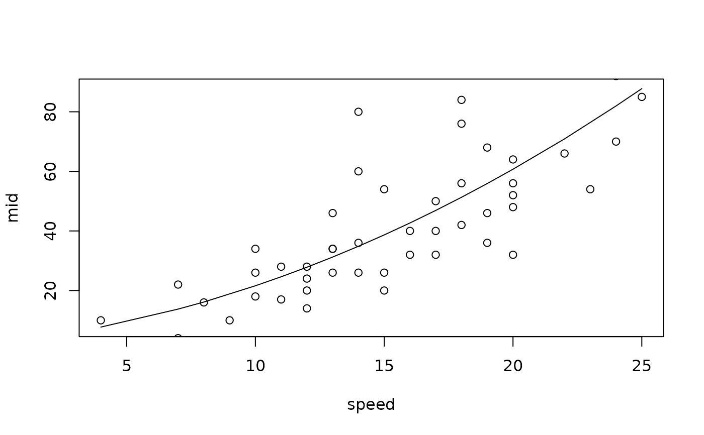

interpret() is used to fit a MID model specifically as an interpretable surrogate for black-box ML models.
A fitted MID model consists of a set of component functions, each with up to two variables.
Usage
interpret(object, ...)
# Default S3 method
interpret(
object,
x,
y = NULL,
weights = NULL,
pred.fun = get.yhat,
link = NULL,
k = c(NA, NA),
type = c(1L, 1L),
frames = list(),
interaction = FALSE,
terms = NULL,
singular.ok = FALSE,
mode = 1L,
method = NULL,
lambda = 0,
kappa = 1e+06,
na.action = getOption("na.action"),
encoding.digits = 3L,
use.catchall = FALSE,
catchall = "(others)",
max.ncol = 3000L,
nil = 1e-07,
tol = 1e-07,
...
)
# S3 method for class 'formula'
interpret(
formula,
data = NULL,
model = NULL,
pred.fun = get.yhat,
weights = NULL,
subset = NULL,
na.action = getOption("na.action"),
mode = 1L,
drop.unused.levels = FALSE,
...
)Arguments
- object
a fitted model object to be interpreted.
- ...
for
interpret.default(), optional arguments including special aliases such asokforsingular.okandieforinteraction. Forinterpret.formula(), optional parameters to be passed tointerpret.default().- x
a matrix or data frame of predictor variables to be used in the fitting process. The response variable should not be included.
- y
an optional numeric vector of the model predictions or the response variable.
- weights
a numeric vector of sample weights for each observation in
x.- pred.fun
a function to obtain predictions from a fitted model, where the first argument is for the fitted model and the second argument is for new data. The default is
get.yhat().- link
a character string specifying the link function. One of "logit", "probit", "cauchit", "cloglog", "identity", "log", "sqrt", "1/mu^2", and "inverse".
- k
an integer or integer-valued vector of length two. The maximum number of sample points for each variable. If a vector is passed,
k[1L]is used for main effects andk[2L]is used for interactions. If an integer is passed,kis used for main effects andsqrt(k)is used for interactions. If not positive, all unique values are used as sample points.- type
an integer or integer-valued vector of length two. The type of encoding. The effects of quantitative variables are modeled as piecewise linear functions if
typeis1, and as step functions iftypeis0. If a vector is passed,type[1L]is used for main effects andtype[2L]is used for interactions.- frames
a named list of encoding frames ("numeric.frame" or "factor.frame" objects). The encoding frames are used to encode the variable of the corresponding name. If the name begins with "|" or ":", the encoding frame is used only for main effects or interactions, respectively.
- interaction
logical. If
TRUEand iftermsandformulaare not supplied, all interactions for each pair of variables are modeled and calculated.- terms
a character vector of term labels specifying the set of component functions to be modeled. If not passed,
termsincludes all main effects, and all interactions ifinteractionisTRUE.- singular.ok
logical. If
FALSE, a singular fit is an error.- mode
an integer specifying the method of calculation. If
modeis1, the centralization constraints are treated as penalties for the least squares problem. Ifmodeis2, the constraints are used to reduce the number of free parameters.- method
an integer specifying the method to be used to solve the least squares problem. A non-negative value will be passed to
RcppEigen::fastLmPure(). If negative,stats::lm.fit()is used.- lambda
the strength of the smoothing penalty. The default is
0.- kappa
the strength of the penalty for the centralization. Used only when
modeis1. The default is1e+6.- na.action
a function or character string specifying the method of
NAhandling. The default is "na.omit".- encoding.digits
an integer. The rounding digits for encoding numeric variables. Used only when
typeis1.- use.catchall
logical. If
TRUE, less frequent levels of qualitative variables are dropped and replaced by the catchall level.- catchall
a character string specifying the catchall level.
- max.ncol
integer. The maximum number of columns of the design matrix.
- nil
a threshold for the intercept and coefficients to be treated as zero. The default is
1e-7.- tol
a tolerance for the singular value decomposition. The default is
1e-7.- formula
a symbolic description of the MID model to be fit.
- data
a data frame containing the variables in the formula. If not found in data, the variables are taken from environment(formula).
- model
a fitted model object to be interpreted.
- subset
an optional vector specifying a subset of observations to be used in the fitting process.
- drop.unused.levels
logical. If
TRUE, unused levels of factors will be dropped.
Value
interpret() returns a "mid" object with the following components:
- weights
a numeric vector of the sample weights.
- call
the matched call.
- terms
the term labels.
- link
a "link-glm" object containing the link function.
- intercept
the intercept.
- encoders
a list of variable encoders.
- main.effects
a list of data frames representing the main effects.
- interacions
a list of data frames representing the interactions.
- uninterpreted.rate
the ratio of the sum of squared error between the target model predictions and the fitted MID values, to the sum of squared deviations of the target model predictions.
- fitted.matrix
a matrix showing the breakdown of the predictions into the effects of the component functions.
- linear.predictors
a numeric vector of the linear predictors.
- fitted.values
a numeric vector of the fitted values.
- residuals
a numeric vector of the working residuals.
- na.action
information about the special handlings of
NAs.
Details
The prediction function of a fitted MID model \(\hat{f}(X)\) has the following structure: $$\hat{f}(X) = f_{\phi} + \Sigma_{j\ \in D}\ f_{j}(X_j) + \Sigma_{j,k\ \in D}\ f_{j,k}(X_j, X_k)$$ where, \(f_\phi\) is the intercept, \(f_{j}(X_j)\) is the main effect of the variable \(j\), and \(f_{j,k}(X_j, X_k)\) is the second-order interaction between the two variables \(j\) and \(k\). The effects of quantitative variables are modeled as piecewise functions of degree 1 (piecewise linear function) or 0 (step function).
The MID values for each sample point are determined using the constrained least squares method. The loss function is \(E[(\hat{Y}-\hat{f}(X))^2]\), where \(\hat{Y}\) is the model prediction or the response variable, and the constraint functions are \(E[f_j(X_j)] = 0\) for each variable \(j\) and \(E[f_{j,k}(X_j, X_k)]=E[f_{j,k}(X_j, X_k)|X_j]=E[f_{j,k}(X_j, X_k)|X_k]=0\) for each pair of variables \((j,k)\).
Examples
# fit a MID model as a surrogate model
data(cars, package = "datasets")
model <- lm(dist ~ I(speed^2) + speed, cars)
mid <- interpret(dist ~ speed, cars, model)
plot(mid, "speed", add.intercept = TRUE) +
points(cars)

#> integer(0)
# customize the flexibility of a MID model
data(Nile, package = "datasets")
mid <- interpret(x = 1L:100L, y = Nile, k = 100L)
plot(mid, "x", add.intercept = TRUE, ylim = c(600L, 1300L)) +
points(x = 1L:100L, y = Nile)
#> integer(0)
# reduce the number of knots by setting the 'k' parameter
mid <- interpret(x = 1L:100L, y = Nile, k = 10L)
plot(mid, "x", add.intercept = TRUE, ylim = c(600L, 1300L)) +
points(x = 1L:100L, y = Nile)
#> integer(0)
# perform a pseudo smoothing by setting the 'lambda' parameter
mid <- interpret(x = 1L:100L, y = Nile, k = 100L, lambda = 100L)
plot(mid, "x", add.intercept = TRUE, ylim = c(600L, 1300L)) +
points(x = 1L:100L, y = Nile)
 #> integer(0)
# fit a MID model as a predictive model
data(airquality, package = "datasets")
mid <- interpret(Ozone ~ .^2, na.omit(airquality), lambda = .1)
#> 'model' is not passed: the response variable in the data is used
plot(mid, "Wind")
#> integer(0)
# fit a MID model as a predictive model
data(airquality, package = "datasets")
mid <- interpret(Ozone ~ .^2, na.omit(airquality), lambda = .1)
#> 'model' is not passed: the response variable in the data is used
plot(mid, "Wind")
 plot(mid, "Temp")
plot(mid, "Wind:Temp", include.main.effects = TRUE)
plot(mid, "Temp")
plot(mid, "Wind:Temp", include.main.effects = TRUE)